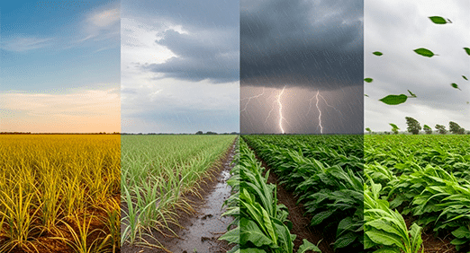

Quem ajudaríamos?
Indo mais afundo no propósito do nosso projeto, queremos utilizar o espaço como mais um meio de o prever o clima de áreas do planeta, assim proporcionando diversas vantagens para todas as pessoas. Com nosso projeto funcionando como imaginamos, ajudaríamos todo tipo de pessoa na Terra, principalmente aquelas que dependem muito de como o clima estará em determinzado dia/horário. Um bom exemplo seriam os agricultores, certas plantas dependem muito de como estará o clima em determinado momento. Com os satélites aprimorados, a margem de erro seria muito menor, o que diminuiria a perda de safra do agricultor.
